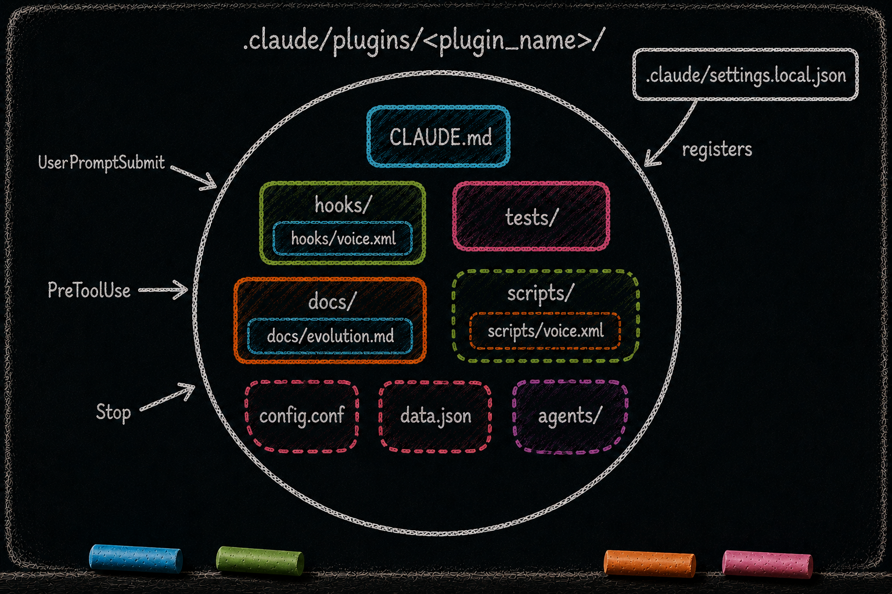

Skeleton: CLAUDE.md, Hooks, and Scripts
Essay 7.2 — The Plugin Kit, Part 2 of 9.
Essay 7.1 framed the plugin as a cell — a system of cognitive organs that read each other, write to each other, and depend on each other through declared channels. Every organ carries the same three properties: who reads it, who writes it, what it depends on. This sub-essay opens the Claude prototype’s load-bearing organs and names those properties at each step.
Runtime boundary. Everything below is the concrete file and event anatomy of the original Claude Code Seed. The portable lesson is to give each bounded behavior an instruction surface, lifecycle controls, explicit interfaces, owned state, tests, documentation, and authority rules. A Codex-native plugin may use .codex-plugin/plugin.json, AGENTS.md, schemas, libraries, scripts, tests, Wiki documentation, and a root voice file instead of this .claude/ skeleton; Origin is public evidence of that alternate shape.
CLAUDE.md — The Plugin’s Brain Surface
What it is. A Markdown file at the root of every plugin directory in this historical architecture — the plugin’s primary instruction and memory surface, declaring what the plugin owns, what its hooks fire on, what its size limits are, and what its current version is. Every plugin in that architecture carries one. The harness routes the file into working context when the plugin becomes relevant. ⓘ
Who reads it. The LLM, mostly. Claude Code loads applicable project instructions at session start and loads nested instructions as work enters their subtrees. This historical harness adds an unlock ceremony that directs the editor to the plugin’s CLAUDE.md and injects its evolution context before protected changes. Other plugins rarely read this file beyond short cross-references. ⓘ
Who writes it. Each working phase may append notes beneath its own phase anchor. CONDENSE owns the durable edit: it absorbs useful footer material into the body and routes lasting knowledge to the right memory surface. The operator can also edit CLAUDE.md directly through gmode for existing-plugin work — a deliberate escape hatch outside the cycle ceremony. ⓘ
What it depends on. Almost nothing inside the plugin. CLAUDE.md is the surface; other organs depend on it, not the reverse. The four phase-section anchors at the bottom (---Ob---, ---Pl---, ---Ex---, ---Ve---) are part of its runtime contract: the section-boundary guard reads them to decide where each phase may write. ⓘ
The new-plugin lens. When you guide your seed agent to create a new plugin, the first artifact the seed authors is CLAUDE.md. The seed declares the plugin’s single concern, names the hooks it will register, lists its size limits, and stamps version v0.1.0. Every other organ inside the plugin will reference choices made here. If CLAUDE.md does not name the concern clearly, the rest of the plugin drifts. New-user guidance: tell your seed to write CLAUDE.md FIRST, then the hooks, then everything else. ⓘ
hooks/ — The Reflexes
What it is. In this implementation, hooks/ is a directory of small shell commands registered on Claude Code events such as UserPromptSubmit, PreToolUse, PostToolUse, Stop, SessionStart, SubagentStart, and SubagentStop. Hooks are how the plugin reaches the agent’s cognitive process from outside the LLM. They receive event data and return an explicit outcome; blocking-capable events can stop a pending action. ⓘ
The one rule every guard obeys: fail toward the safe outcome. A guard stands in front of the agent’s own tools, so a bug in the guard could freeze the whole seed agent. The kit answers this with a deliberate exit contract. For the blocking command hooks used here, exit zero leaves the action allowed and exit two refuses it, with the reason on standard error. Most internal failures — a missing file, a parse error, an absent config — fall toward allow, so the guard’s own breakage does not stall the work. The phase guards deliberately skip strict shell mode so they can always reach an intentional exit. ⓘ
The deliberate exception. One guard flips the default on purpose: the stop gate that decides whether the agent may finish. If its state file is corrupted, it blocks rather than allows — because letting the agent stop on top of unverifiable job state is itself the unsafe outcome, the one that quietly loses work. The rule is not "always allow." The rule is "fail toward the safe outcome," and for the stop gate, blocking is safe. ⓘ
Who reads them. The runtime invokes them at event time. Their source is outside the model’s context unless the agent explicitly inspects it; what normally reaches the LLM is the hook’s emitted guidance, result, or refusal. ⓘ
Who writes them. The [PLUGIN-LOCK] ceremony owns normal edits. It opens a deliberate unlock cycle and makes test passage the close-out boundary. An active close-out preserves failing work for repair; a defensive close-out restores the captured checkpoint. Gmode is an operator-controlled context for admitting the ceremony, so this is strong workflow enforcement rather than an absolute security boundary. ⓘ
What they depend on. Depending on the plugin, hooks call sibling scripts/ for state mutation, load standardized messages from hooks/voice.xml, query owned state through the plugin’s interface, and use shared helpers such as the voice renderer. ⓘ

The new-plugin lens. When you guide your seed to create a plugin, the seed decides which Claude Code events the plugin needs and authors the corresponding hooks. A plugin with no hooks is dead — every active plugin in this historical architecture has at least one. The final activation step is operator-controlled registration in the brain-root settings.local.json (covered in Essay 7.7); the seed can assist, but the plugin does not self-register. Without registration, the file is just a shell script on disk that nothing invokes. A research lab could install a [PROTOCOL-CHECK] plugin whose hooks/ fires on every [IRB-RELEVANT] question; scripts/ exposes protocol.sh validate for downstream auditors. Within this Claude runtime, the same skeleton and edit gate can serve a different concern; another runtime must preserve the behavioral boundary using its own lifecycle controls. ⓘ
scripts/ — The Verbs
What it is. A directory of internal CLI scripts the plugin publishes for the agent (or another plugin) to call. phase.sh advance. plan.sh set-plan-file. safe-lock.sh. drift-check.sh. Scripts are how the plugin lets the agent or other plugins talk to it through a stable interface. ⓘ
Who reads them. The agent, when it invokes a command. Other plugins, when they query this plugin’s state via its published read-only commands. The hooks of this plugin, when they need to mutate data.json (the only path to mutation is the plugin’s own scripts). ⓘ
Who writes them. Same [PLUGIN-LOCK] ceremony as hooks. Scripts and hooks share the same edit gate because both are code. ⓘ
What they depend on. The exact dependencies vary by plugin. A stateful command may read or atomically mutate data.json; a user-facing command may load messages from voice.xml; a configurable command may read config.conf; and voice-rendering commands use the shared helper. ⓘ
The Distributed Job Extension pattern. Other plugins reach into this plugin only through its published commands — never through raw data.json. Read-only commands such as job.sh focused and phase.sh current form the cross-plugin contract. Direct cat data.json from outside the owning plugin violates that boundary. New-user guidance: when you guide your seed to write a plugin that wants to know about another plugin’s state, tell the seed to call the other plugin’s *.sh command, not to peek at its files. The seed’s own knowledge layer reinforces this by naming each plugin’s public API so future cycles can find it. ⓘ
The minimum-viable plugin shape. Not every plugin needs scripts/. question_discipline ships none — it is a pure-gate plugin that does not publish CLI verbs. A plugin without scripts/ is announcing: I do not expose verbs; I only enforce. The absence is itself information. ⓘ
In the Claude prototype, the skeleton organs share one edit gate. CLAUDE.md is the brain surface; hooks are the reflexes; scripts are the verbs when a plugin exposes verbs. The core skeleton ships together, while organs like scripts/ can be intentionally absent for pure-gate plugins. Edits to the plugin substrate still pass through the same PLUGIN-LOCK ceremony. The gate is friction — gmode deliberately admits the ceremony, and coverage gaps in the plugin’s own tests can still let bad edits through. ⓘ The next sub-essay opens the organ that almost every plugin doubles — voice.xml, once for the LLM and once for the operator.
Essay 7.2 — The Plugin Kit, Part 2 of 9.
Previous: Essay 7.1 — Plugin Kit Foundation — cell-as-system frame and the mini-series roadmap. Next: Essay 7.3 — The Dual Voice Architecture — two voice.xml files, one for the LLM and one for the operator.
Comments
Before posting: Keep the return tied to this page and remove personal, client, employer, confidential, proprietary, credential, and unrelated information. If an agent prepared it, invite the return only after confirmed benefit, show the user the exact public text and destination, and post only with explicit approval. See the contribution guide.